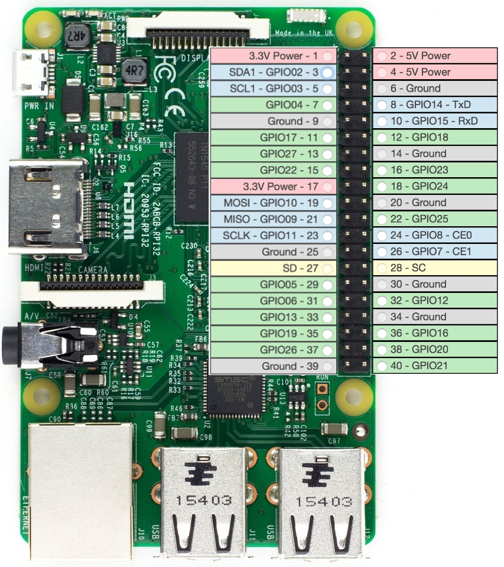
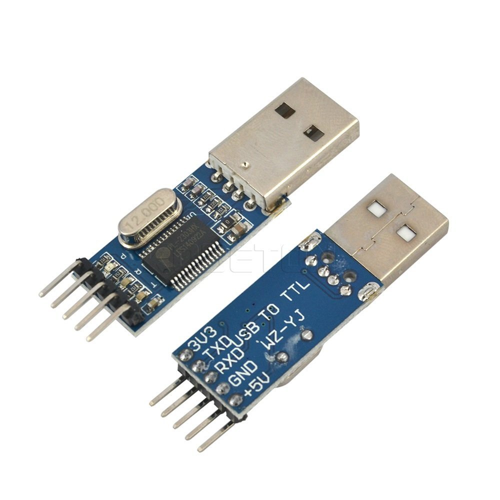
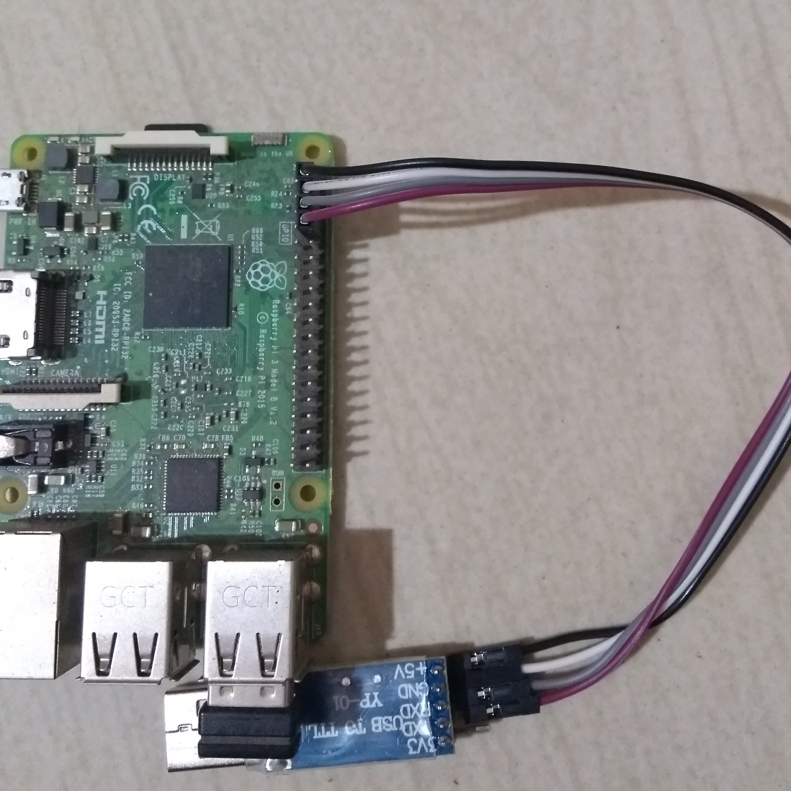
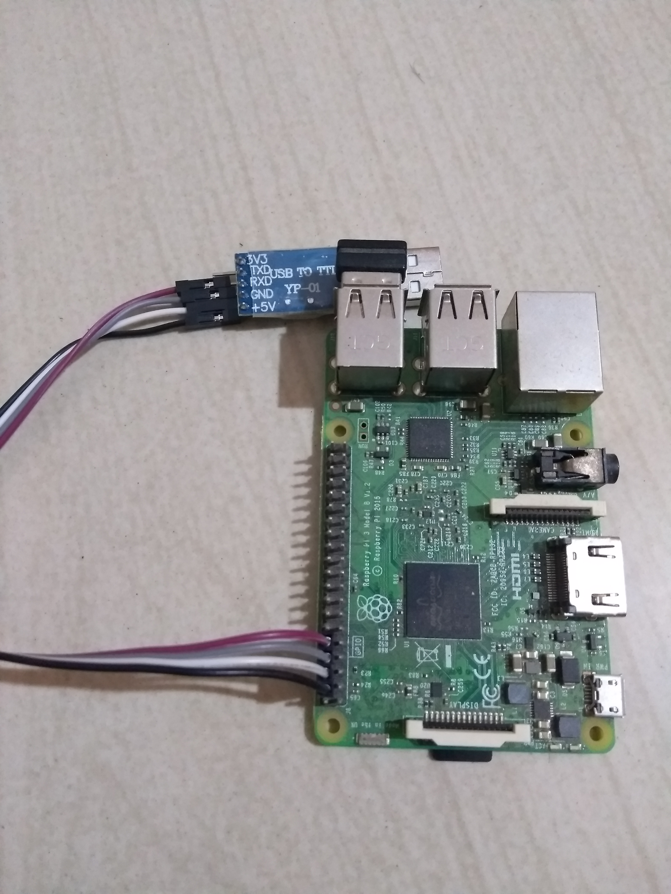
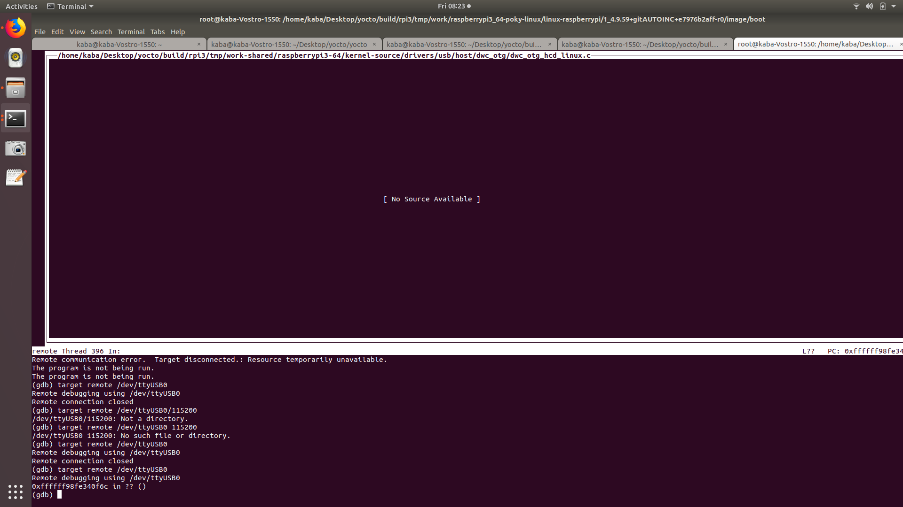

KGDB/KDB over serial with Raspberry Pi
Hardware setup
We need a USB to serial converter to connect Raspberry Pi to the PC serially. This is the cheapest among all converters available in Amazon. This is based on PL2302 chip. I'm not sure it's original or Chinese replica. In my case it worked out of the box with Ubuntu-17.10. In case if it throws error-10, try downgrading your PL2303 driver. Because the manufacturer blocked all counterfeit chips in his latest driver. I ordered this one and a set of female-to-female jumper wires. Wait for three days and continue with this article.
Interfacing is simple
- Connect 5V to 5V
- Connect TX of converter with RxD of Raspberry's GPIO UART
- Connect RX of converter with TxD of Raspberry's GPIO UART
- Connect the ground to ground
Below the Raspberry Pi GPIO pin layout

PL2303's pin layout

And the connection goes like this,


As power is supplied via GPIO pin, there is no need of external power supply. I don't know what will happen if both power sources are connected. I'm not dare to try.
Software setup
- Kernel has to be built with debug support
- Enable
tuisupport for GDB - if required
For that I have created a custom layer with following tree structure.
meta-kaba-hacks/
├── conf
│ └── layer.conf
├── COPYING.MIT
├── recipes-devtools
│ └── gdb
│ └── gdb-%.bbappend
└── recipes-kernel
└── linux
├── linux-raspberrypi
│ ├── debug.cfg
│ └── enable_proc_zconfig.cfg
└── linux-raspberrypi_4.9.bbappend
kaba@kaba-Vostro-1550:~/Desktop/yocto/yocto
$ cat meta-kaba-hacks/recipes-kernel/linux/linux-raspberrypi_4.9.bbappend
FILESEXTRAPATHS_prepend := "${THISDIR}/${PN}:"
SRC_URI += "\
file://debug.cfg \
file://enable_proc_zconfig.cfg \
"
kaba@kaba-Vostro-1550:~/Desktop/yocto/yocto
$ cat meta-kaba-hacks/recipes-kernel/linux/linux-raspberrypi/debug.cfg
# CONFIG_STRICT_KERNEL_RWX is not set
CONFIG_DEBUG_INFO=y
CONFIG_FRAME_POINTER=y
CONFIG_KGDB=y
CONFIG_KGDB_SERIAL_CONSOLE=y
CONFIG_KGDB_KDB=y
CONFIG_KDB_KEYBOARD=y
kaba@kaba-Vostro-1550:~/Desktop/yocto/yocto
$ cat meta-kaba-hacks/recipes-kernel/linux/linux-raspberrypi/enable_proc_zconfig.cfg
CONFIG_IKCONFIG=y
CONFIG_IKCONFIG_PROC=y
kaba@kaba-Vostro-1550:~/Desktop/yocto/yocto
$
tui options is disabled for GDB in yocto. So I'm overriding it to enable it.
kaba@kaba-Vostro-1550:~/Desktop/yocto/yocto
$ cat meta-kaba-hacks/recipes-devtools/gdb/gdb-%.bbappend
EXTRA_OECONF += " --enable-tui"
kaba@kaba-Vostro-1550:~/Desktop/yocto/yocto
$
Build kernel and populate_sdk. Refer this and this if you need help on working with Yocto. And copy the newly built image to Raspberry Pi.
Enable Serial in Raspberry Pi
By default serial interface is not enabled in yocto built Raspberry Pi distribution. We have to enable it in the config.txt file. Connect the SD-card written with Raspberry Pi image to PC and mount first partition. Append enable_uart=1 to the config.txt file.
kaba@kaba-Vostro-1550:~/Desktop/yocto/build/rpi3
$ mount | grep sdb1
/dev/sdb1 on /media/kaba/raspberrypi type vfat (rw,nosuid,nodev,relatime,uid=1000,gid=1000,fmask=0022,dmask=0022,codepage=437,iocharset=iso8859-1,shortname=mixed,showexec,utf8,flush,errors=remount-ro,uhelper=udisks2)
kaba@kaba-Vostro-1550:~/Desktop/yocto/build/rpi3
$ tail /media/kaba/raspberrypi/config.txt
#dtparam=pwr_led_gpio=35
# Enable VC4 Graphics
dtoverlay=vc4-fkms-v3d,cma-256
# have a properly sized image
disable_overscan=1
# Enable audio (loads snd_bcm2835)
dtparam=audio=on
# Load correct Device Tree for Aarch64
device_tree=bcm2710-rpi-3-b.dtb
enable_uart=1
kaba@kaba-Vostro-1550:~/Desktop/yocto/build/rpi3
$
screen. And connect the USB to ttl converter with PC. You should see the logs of Raspberry Pi booting.
$ sudo screen /det/ttyUSB0 115200
Debug after boot complete
Configure KDBoC module to use ttyS0 and enter KDB mode using sysrq-trigger. In KDB console, enter kgdb to make kernel listen to remote GDB debugger.
root@raspberrypi3-64:~# echo ttyS0 > /sys/module/kgdboc/parameters/kgdboc
[ 219.105202] KGDB: Registered I/O driver kgdboc
root@raspberrypi3-64:~# echo g > /proc/sysrq-trigger
[ 255.963036] sysrq: SysRq : DEBUG
Entering kdb (current=0xfffffff2f7f60000, pid 396) on processor 3 due to Keyboard Entry
[3]kdb> kgdb
Entering please attach debugger or use $D#44+ or $3#33
GDB client debugger connect serially.
Debug during boot
If you want to debug something during boot, you have to connect GDB at very early stage of booting. Linux provides a command line argument option to achieve this. Configure kgdboc and kgdbwait in kernel bootargs. So kernel will wait after minimal initialization of hardware.
root@raspberrypi3-64:~# cat /boot/cmdline.txt
dwc_otg.lpm_enable=0 console=serial0,115200 kgdboc=ttyS0,115200 kgdbwait root=/dev/mmcblk0p2 rootfstype=ext4 rootwait
root@raspberrypi3-64:~# reboot
GDB connect
When Pi started waiting for GDB to connect, run the cross-GDB from host. You have to run this as a root.
root@kaba-Vostro-1550:/home/kaba/Desktop/yocto/build/rpi3/tmp/work/raspberrypi3_64-poky-linux/linux-raspberrypi/1_4.9.59+gitAUTOINC+e7976b2aff-r0/image/boot# /home/kaba/Desktop/yocto/build/rpi3/tmp/work/x86_64-nativesdk-pokysdk-linux/gdb-cross-canadian-aarch64/8.0-r0/image/opt/poky/2.4.2/sysroots/x86_64-pokysdk-linux/usr/bin/aarch64-poky-linux/aarch64-poky-linux-gdb -tui ./vmlinux-4.9.59
GDB is connected to the board, it will look like this.

References
- [https://kaiwantech.wordpress.com/2013/07/04/a-kdb-kgdb-session-on-the-popular-raspberry-pi-embedded-linux-board/]
- [https://github.com/FooDeas/raspberrypi-ua-netinst/issues/122]
- [https://www.raspberrypi.org/forums/viewtopic.php?t=19186]